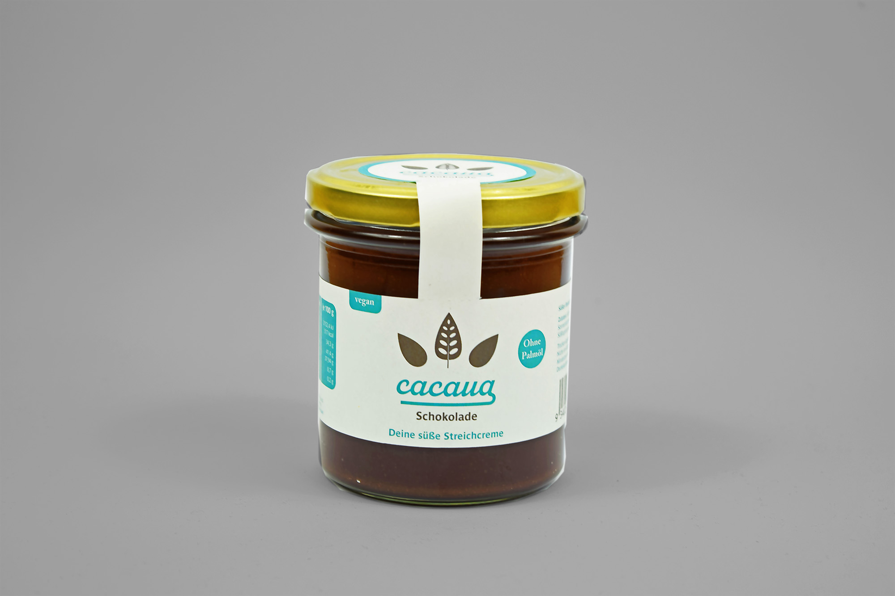
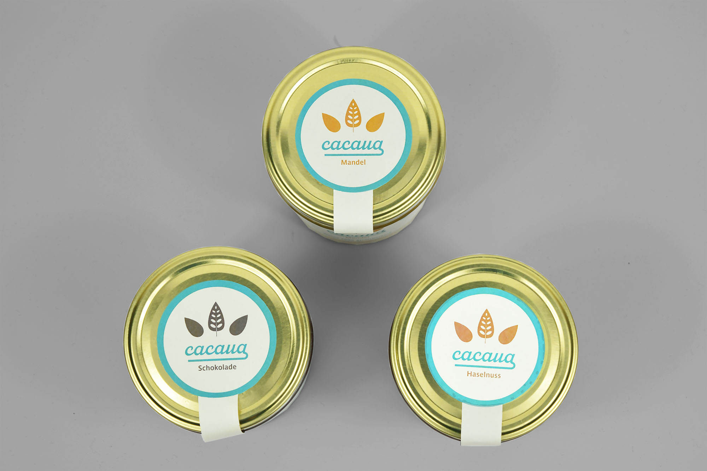

- Cacaua ist eine fiktive Marke für süße umweltfreundliche und vegane Brotaufstriche. Diese sollen im Supermarkt in 500 ml Sturzgläsern angeboten werden. Für die Streichcreme gestaltete ich Logo und zugehörige Etiketten für die drei Sorten.
- Herausforderungen
- Die Brotaufstriche von Cacaua sollen im Supermarktregal auffallen und gleichzeitig hipp und nachhaltig wirken. Ein Erstöffnungsschutz muss gegeben sein.
- Lösungsansatz
- Der helle Türkiston als Corporate Colour, der für Nussnugatcremes unüblich ist, ist ein Hingucker im Supermarktregal. Die aus recyceltem Material hergestellten Nassleimetiketten sind aus Nachhaltigkeitsgründen nur spärlich bedruckt. Ein Frischesiegeletikett gewährleistet den Erstöffnungsschutz.
- Auftrag: Gestaltung von Etiketten für Brotaufstriche
- Entstehung: Einzelprojekt aus der Freizeit
- Datum: Juni 2020


